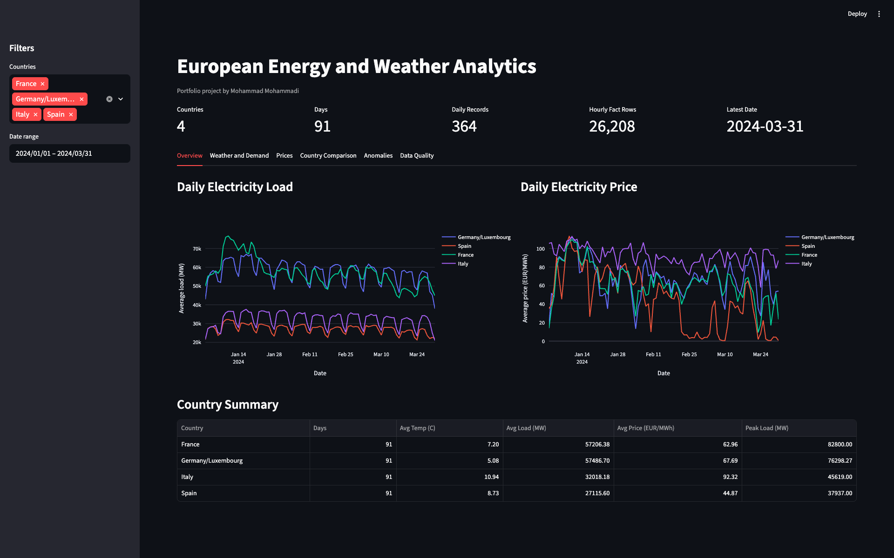
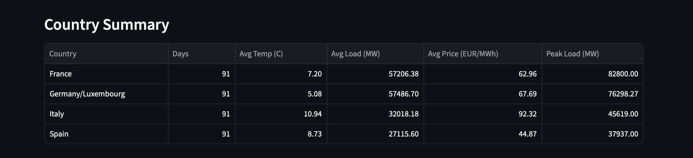
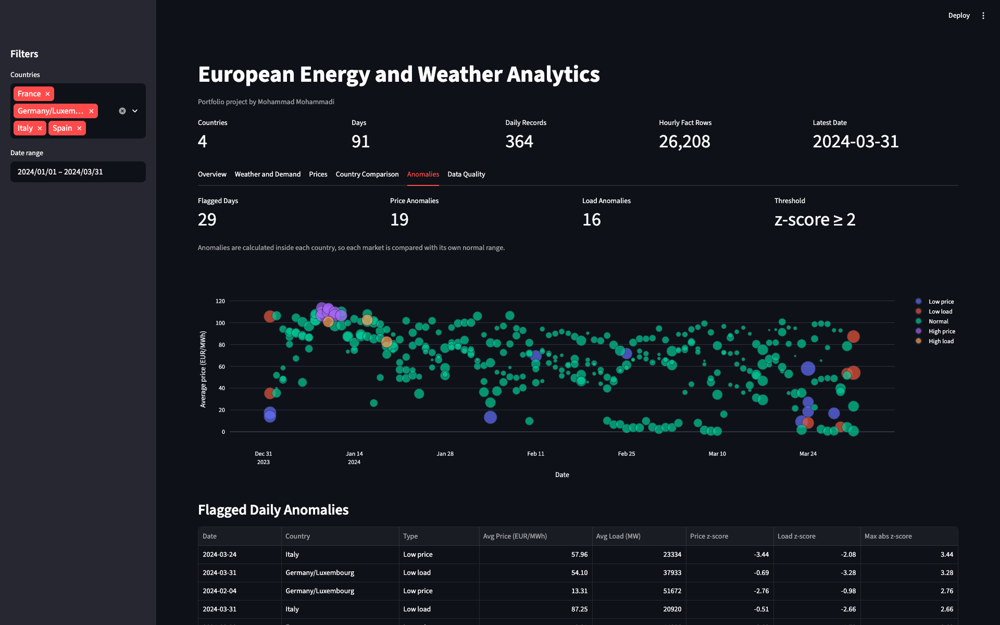

European Energy and Weather Analytics Pipeline
A Dockerized Python pipeline that collects weather and electricity market data, stores it in PostgreSQL, validates the data, builds a daily analytics mart, and presents the results in Streamlit.
Current Results
Loaded period: 2024-01-01 to
2024-03-31. Markets: Italy, France, Spain, and
Germany/Luxembourg.
What I Built
- Open-Meteo extraction for hourly weather data.
- ENTSO-E extraction for electricity load and prices.
- PostgreSQL fact tables and a daily analytics mart.
- Prefect flow for the end-to-end ETL process.
- Streamlit dashboard with filters, charts, and data quality views.
- Simple anomaly detection using country-level z-scores.
- pytest test suite and GitHub Actions CI.
What I Found
- Italy had the highest average day-ahead price:
92.32 EUR/MWh. - Spain had the lowest average day-ahead price:
44.87 EUR/MWh. - France reached the highest peak load:
82,800 MW. - Temperature and load were negatively correlated in all four markets.
These findings describe the current three-month sample. They are not meant as broad claims about the full European energy market.
Architecture
Dashboard Preview



Run Locally
The interactive dashboard currently runs locally with Docker and PostgreSQL. GitHub Pages is only the static project page.
docker compose up -d --build
Then run the ETL flow with
INCLUDE_ENERGY=true after adding an ENTSO-E token to
the local .env file.
Optional Extensions
- Add renewable generation data from ENTSO-E.
- Export a small demo dataset for a public Streamlit deployment.
- Add a forecasting model after loading a longer period.
- Deploy the interactive dashboard separately from this static page.